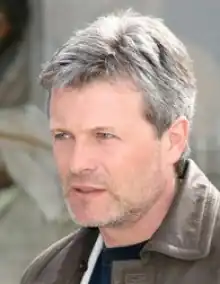

Жовна Олександр Юрійович народився 15 лютого 1960 року у м. Новомиргороді Кіровоградської області.
Закінчив дефектологічний факультет Київського педагогічного інституту ім. М. Горького. Нині живе в рідному місті Новомиргороді, працює вихователем у дитячому будинку для неповносправних дітей.
Перші оповідання надрукував 1991 року у львівському часописі "Дзвін", згодом друкувався у часописах "Дніпро", "Донбас", "Україна", "Кур'єр Кривбасу", "Лель", "Вежа", "Степ" та інші. Твори Олександра Жовни друкувались у колективних збірниках "Квіти у темній кімнаті" та "Приватна колекція". Автор книг оповідань та повістей "Партитура на могильному камені", "Вдовушка", "Експеримент", "Маленьке життя". Його твори видані в Токіо та Нью-Йорку. Ім'я Олександра Жовни занесене до Української енциклопедії визначних особистостей ХХ століття. Письменник не раз виступав автором сценаріїв до фільмів, знятих за його творами. Всі вони – "Партитура на могильному камені", "Світла ніч" та "Секонд-хенд", вже побачили світ. У четвертому фільмі "Маленьке життя" Олександр Жовна дебютував ще й як режиссер-постановник та актор. Лауреат премій "У свічаді слова" Євгена Бачинського (США, 1996), "Благовіст" (1999). Олександр Жовна – лауреат і інших літературних премій, зокрема на Всеукраїнському конкурсі романів і кіносценаріїв "Коронація слова" 2000 року отримав диплом за кіносценарій "Дорога", 2001 року – за сценарій "Експеримент", 2003 року – за сценарій "Вдовушка". За його творами знято художні стрічки: "Партитура на могильному камені" (1996, режисер Ярослав Лупій), "Ніч світла" (2004, режисер Роман Балаян), "Секонд-хенд" (2005, режисер Ярослав Лупій), "Маленьке життя" (2007 рік, режисер Олександр Жовна). За вагомий внесок у вітчизняну літературу, Олександр Жовна став ще й лауреатом премії імені Володимира Винниченка газети "Народне слово" (2008). Лауреат Обласної літературної премії ім. Є. Маланюка (2008), за книгу оповідань та повістей "Її тіло пахло зимовими яблуками" у номінації "Художня література". Був членом Національної Спілки письменників України з 1994 року. Нещодавно Олександр Жовна вийшов з неї. Його фільм "Милі мої українці" в 2016 році було номіновано на Шевченківську премію в номінації "Кінематографія". Має хобі – колекціонує предмети старовини, не байдужий до ретроавтомобілів і звичайно, до суто чоловічих захоплень – риболовлі та полювання. Звідки автор бере сюжети для оповідань? Нерідко він будує свої сюжети на інтризі незвичайного випадку, пригоди, в них є свої сюрпризи, загадки, несподівані розв’язки. В основному, в його творах описані реальні життєві ситуації. Своє перше оповідання, яке називалося "Сапенсіо", що в перекладі з грецької означає "розум", Олександр написав під час навчання у вузі. За основу сюжету взяв випадок, про який розповів добрий приятель – диригент Варшавського оперного театру Войцех Лепковский. Він же й надрукував його в одній з польських газет, що для молодого письменника було несподіваним і приємним сюрпризом. О. Жовна перші свої оповідання писав російською мовою, пізніше зрозумів, що мусить писати мовою, яку вбирав у себе разом з молоком матері. Сюжет повісті "Експеримент", за якою знято фільм "Ніч світла" підказала робота. Як з'явилася "Партитура на могильному камені"? Якось з тим же Войцехом Лепковським пішли на Байкове кладовище там часто гуляли біля однієї могили на гранітному споминку помітили викарбувані ноти. Войцех на сірникову коробку їх переписав, а вдома сів за рояль і зіграв. То був реквієм невідомого композитора. І Жовна зрозумів: є початок для сюжету. А потім забув про це, згадав лише, коли їхав автобусом зі Львова в Мукачеве. Буквально за півгодини перед ним все пройшло, як у кіно. Приїхав у Мукачеве і буквально за 4-5 днів написав. Сюжет розвивався так швидко, що ледь встигав записувати. Оповідання "Маленьке життя" написав несподівано. Сидів якось у кімнаті, де в нього зберігаються колекції ікон, настрій кепський: Сидів і дивився на маленьку стару ікону. Довго дивився, і здалося, що її написано дитячою рукою – якийсь незграбний, примітивний образок. І ось йому вже уявляється хлопчик Пилипок, який малює цю іконку. Його життя в монастирі, французька дівчина… Фільм за мотивами оповідання розповідає про долю маленького хлопчика Пилипка. Голодної зими 1932-1933 років помирає його мати. Хлопчика забирає до себе дядько, але Пилипко тікає з його будинку на пошуки матері. В лісі він заблукав і ледь не замерз. Від смерті дитину рятують два ченці і забирають його до себе в монастир. Там він вчиться писати ікони і виявляється дуже здібним художником. Згодом в монастир приїжджає француз. Його юна дочка дуже хвора, і хлопчик щиро бажає її одужання. Дізнавшись, що для цього потрібно молитися Святому Пантелеймону, Пилипко вирішує намалювати його ікону і допомогти дівчинці. "Маленьке життя" перемогло на конкурсі Міністерства культури і туризму України на кращий соціально корисний сценарій. Міністерство повинно профінансувати екранізацію оповідання, але коштів не отримала знімальна група жодної копійки. На допомогу прийшла група компанії "Фокстрот". Про популярність фільму свідчить його участь у кінофестивалях "Покров" та "Молодість". На VI Міжнародному фестивалі православного кіно "Покров" він посів ІІІ місце. Фільм отримав благословення Митрополита Київського та всія України Володимира. Під час зйомок фільму відбувалися дива. Насамперед, вже на знімальному майданчику, дія у фільмі відбувається головним чином узимку. Коли були вже готові до початку роботи, у лютому раптом настала справжня весна. Ні тобі снігу, ні морозу – все закінчилося. Знімати нема чого. Запланували зйомки на 5 березня. І раптом за день до зйомок, випав сніг, та такий, що не могли добратися до Лебединського монастиря, де мали знімати фільм. Фільм головним чином знімався в Новомиргороді. Автор про це мріяв, цього хотів, так вирішив. І от коли приїхали в Новомиргород, щоб продовжити зйомки у Лубківській церкві, головний чоловічий герой раптом захворів. Температура – під сорок, які вже зйомки? Що робити? Лубківська церква – особлива, свого часу тут правив священик, наділений даром зцілення, багато людей приїздили сюди за зціленням. І от юний актор Кирилко Сосницький зайшов у цю церкву, вслід за старостихою, перехрестився, поцілував ікону. Почалися зйомки, і хлопчик на очах почав мінятися. Мама зміряла температуру – 36,6. Це було ще одне диво. Містика йде поруч з ним, з його творчістю. Це не раз підтверджувалося, а пояснити важко. На тлі практично повного занепаду моралі "Маленьке життя" – це спроба показати доброту, самопожертву й любов, що продовжують живити нашу духовність. За значний внесок у розвиток української культури Олександру Юрійовичу Жовні присвоєно почесне звання "Заслужений діяч мистецтв України". Частину творів письменник друкує російською мовою. Вважаючи це свідченням реальної демократії в Україні. Така собі експансія української літератури в російськомовне середовище і не лише в Україні. Зрештою, не один же Путін розмовляє російською. Це мова Чехова, Толстого, Сахарова, Ахіджакової, Басілашвілі, Шевчука, Макаревича та багатьох інших порядних людей. Бестселером у бібліотеці стала "История Лизы", що побачила світ в 2015 році, пізніше було видано україномовний варіант – "Солодка ілюзія життя". Повість стала номінантом премії "Літакцент" 2015 року. "Солодка ілюзія життя" – історія двох закоханих пар. Однієї не зовсім звичайної, іншої й зовсім незвичайної. Повірити в ці історії так само важко, як і не повірити. За абсолютною доступністю, часом витонченою легкістю оповіді прихована складна, інколи незбагненна глибина людських стосунків. Цього разу – це таємниці існуючих поряд з нами незвичайних людей, що волею долі стали чи то ущемленими, чи то обраними нею. "Моя творчість не дуже світла. Проте мені здається, що саме тужний, сумний, а не щасливий фінал книги формує справжню добру людину, яка не схоче нести у світ зло", – так говорить про свою творчість О. Жовна. Твори Жовна Олександр Бабка: оповідання / Олександр Жовна // Степ. – 1996. – №1. – С. 34-40. Жовна, Олександр. Вдовушка [Текст] / Олександр Жовна; Автор передм. В.Панченко. – Кіровоград: Кіровоград. держ. вид-во, 1996. – 269 с.: іл., портр. Жовна, Олександр Юрійович. Визрівання [Текст] / Олександр Жовна. – Кіровоград: Імекс-ЛТД, 2015. – 559 с. Жовна, Александр. Волшебные ленточки в стране голубого неба [Текст] / Александр Жовна // Украина-Центр. – 2015. – 26 марта. – С. 15. Жовна Олександр Експеримент: розповідь тифлосурдопедагога / Олександр Жовна // Вежа. – 2003. – №13. – С. 65-92. Жовна, Олександр. Експеримент [Текст] / Олександр Жовна; Ред. Василь Бондар. – Кіровоград: Мавік, 2003. – 243 с.: іл., портр. Жовна, Александр Юрьевич. История Лизы [Текст]: роман / Александр Жовна. – Кировоград: Имэкс ЛТД, 2014.– 199 с. Жовна Олександр. Її тіло пахло зимовими яблуками: епістолярна повість / Олександр Жовна // Вежа. – 1996. – №4-5. – С. 31-59. Жовна, Олександр Юрійович. Її тіло пахло зимовими яблуками [Текст]: оповідання та повісті / Олександр Жовна; ред.: Василь Габор. Львів: Піраміда, 2008. – 386 с. Жовна, Олександр Юрійович. Маленьке життя [Текст]: оповідання / Олександр Жовна; ред. і авт. передм. Василь Бондар, худ. Любов Кир’янова. – Кіровоград: ПВЦ "Мавік", 2004. – 86 с.: іл. Жовна, Олександр. Партитура на могильному камені [Текст] / Олександр Жовна. Яловичина (Макабреска) / Богдан Жолдак. – Б. м.: НКВЦ "Рось", 1991. – 70 с. Жовна, О. Після лекції [Текст]: оповідання / О. Жовна // Нова газета. – 2003. – 18 липня. – С. 9. Жовна, О. Різдвяної ночі [Текст]: оповідання / О. Жовна // Нова газета. – 2003. – 26 грудня. – С. 8-9. Жовна, О. S. H. sekond hand (зі щоденника, знайденого в будинку на пустирі) [Текст] / О. Жовна // Хобі. – 2006. – №7-8. – С. 58-67, 82-90.